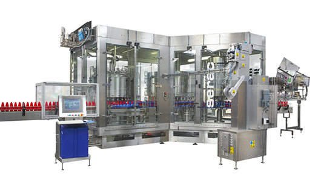

Remplisseuse semi-automatique
La remplisseuse semi-automatique est le point d'entrée idéal pour les PME : investissement maîtrisé, flexible multi-formats, évolutive vers une ligne automatique KIWL.

En Afrique francophone, beaucoup d'usines démarrent avec un volume encore variable : lancer une ligne 6 000 bph n'a pas de sens. Le semi-automatique permet de produire dès la première semaine, former les opérateurs, valider le packaging, puis investir progressivement dans boucheuse, étiqueteuse et convoyeurs.
Fonctionnement
L'opérateur positionne la bouteille (ou le pot) sous la buse. Un pédale / bouton déclenche le cycle de dosage (piston ou pompe). La cadence dépend du produit et de l'habileté — typiquement de quelques centaines à environ 1 200 bouteilles/heure.
| Opération | Placement manuel + cycle machine |
|---|---|
| Cadence indicative | ≈ 300–1 200 bph |
| Produits | Sauces, huile, cosmétique, détergents |
| Évolution | Ajout boucheuse + étiqueteuse + convoyeur |
| Formation | Courte ; support WhatsApp inclus |
Pour qui ?
- Start-up sauce / mayonnaise / huile de palme
- Ateliers qui testent de nouveaux formats
- Usines multi-produits à petits lots
- Budgets qui exigent un ROI rapide
Passer ensuite en automatique
Conservez la même logique produit (souvent piston). Ajoutez une boucheuse, une étiqueteuse, puis une ligne complète ou un monobloc. Nous concevons dès le départ les interfaces pour éviter d'acheter deux fois.
Combien d'opérateurs ?
Souvent 1 à 2 personnes au poste de remplissage, plus conditionnement aval.
Peut-on remplir sauce et huile sur la même machine ?
Parfois oui avec nettoyage complet et éventuellement kit dédié. Nous le validons au devis.
ROI et montée en charge
Une semi-auto bien choisie se rentabilise souvent en quelques mois dès que vous quittez le remplissage manuel. Elle réduit le gaspillage, uniformise le poids net commercial et libère du temps pour le mélange et le contrôle qualité.
Planifiez dès l'achat l'emplacement futur du convoyeur et de la boucheuse : cela évite de déplacer toute l'installation six mois plus tard. KIWL peut fournir un schéma d'atelier simple (entrée bouteilles, sortie cartons, zone lavage).
Limites à connaître
Le semi-automatique dépend de l'opérateur : la cadence n'est pas celle d'une ligne 4 000 bph. Si vous avez déjà des commandes stables et une équipe en 2×8, passez directement à l'automatique. Sinon, commencez semi-auto, mesurez, puis upgrade.
Exemple de poste semi-auto
Un opérateur à gauche place les bouteilles, un second à droite pose les bouchons ou transfère vers une boucheuse manuelle/semi. Cadence réaliste 600–900 bph sur mayo selon habileté. Ajoutez ensuite une boucheuse automatique sur le même convoyeur sans jeter la remplisseuse initiale.